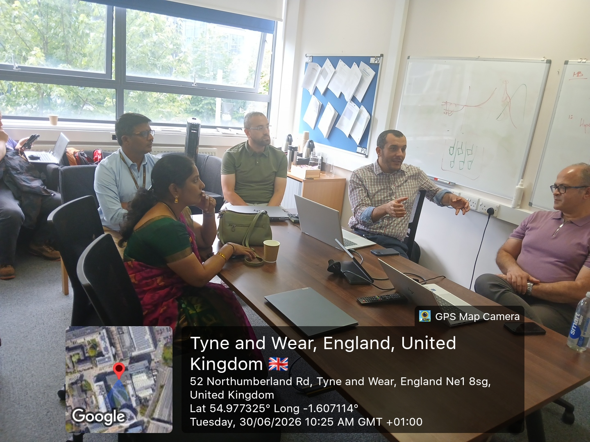
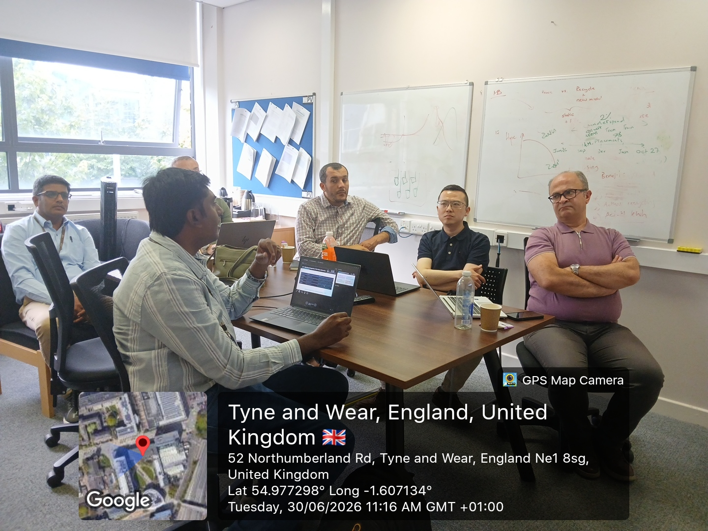
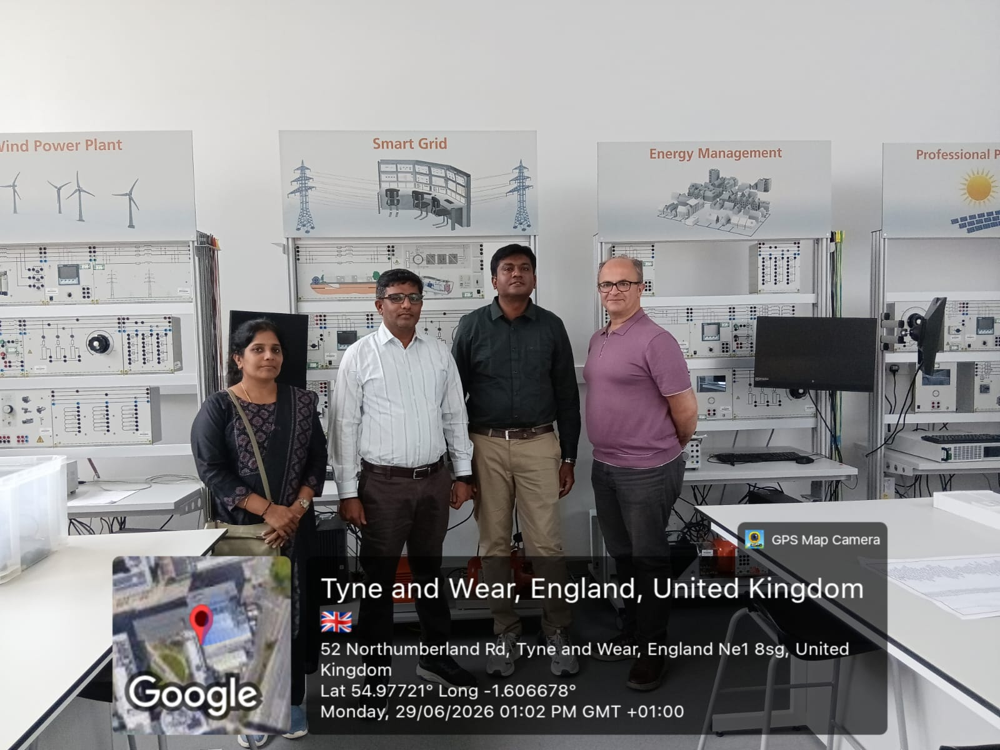
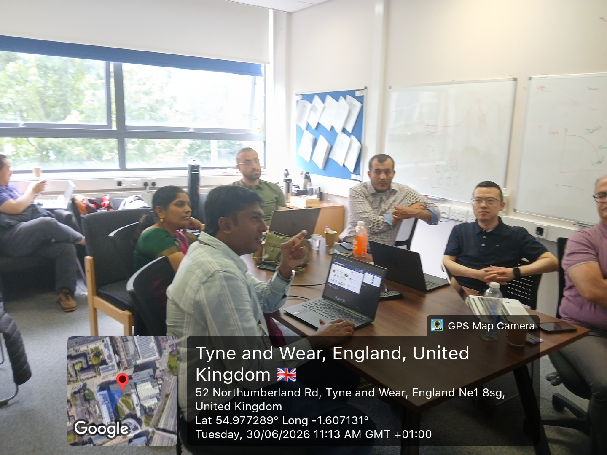

About the Visit
As part of the British Council-funded Indo–UK collaborative project, Advancing Quantum Vision Systems: Real-Time Surveillance Skill Building for Smart Energy Facilities, the project team from Vellore Institute of Technology (VIT) visited Northumbria University, Newcastle upon Tyne, United Kingdom, during 29–30 June 2026. The visit included technical workshops, strategic meetings, laboratory visits, research discussions and planning sessions aimed at strengthening Indo–UK collaboration in Quantum Computing, Artificial Intelligence, Computer Vision and Smart Energy Systems.
Strategic Meetings
Project review meetings with Northumbria University faculty to strengthen international academic collaboration.
Technical Workshops
Expert sessions on Digital Twins, Optical Wireless Communication, Quantum Computing and Artificial Intelligence.
Research Laboratories
Visits to advanced research laboratories supporting Quantum Technologies, AI and Smart Energy research.
Major Outcomes
- Review of AQVS project progress and deliverables.
- Joint discussions on research publications and digital learning platforms.
- Planning for faculty exchange and student mobility programmes.
- Future international workshops and hackathons.
- Strengthening Indo–UK collaboration in Quantum Computing, AI, Computer Vision and Smart Energy.
Visit Gallery

Opening Meeting

Technical Workshop

Laboratory Visit

Research Discussion

Group Photograph

Northumbria Campus